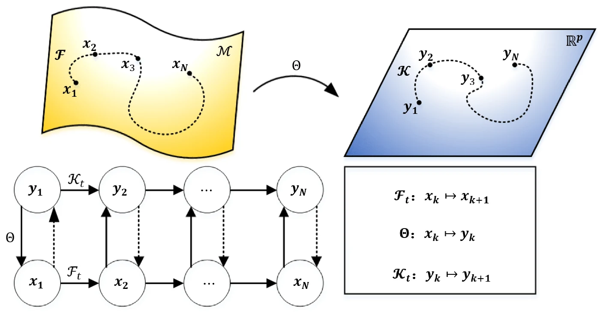

Programming & Technical Skills
-
Languages: Python, R, C#, LaTeX, Beamer.
-
Machine Learning & Deep Learning: TensorFlow, PyTorch, PyTorch Geometric, scikit-learn.
-
Scientific Computing: NumPy, SciPy, NetworkX
-
Topological Deep Learning Frameworks: TopoModelX, TopoNetX, TopoEmbedX.
-
ODE solver. Higher Order Splitting Method to solve ODEs.
-
Statistical tests: ANOVA, A/B test, Bayesian A/B Testing.